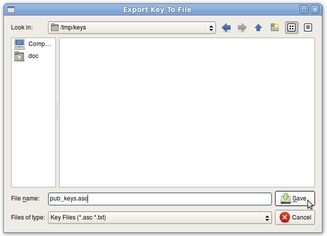

Howto export public keys
There are three respectively four steps for exporting public keys. We assume, that Bobby wants to export Alice's and his key to give it to Charly, so that he can encrypt messages and files to them.
STEP 1: Open the key management
First Bobby opens the key management through the toolbar.

STEP 2: Choose keys
Secondly he checks Alice's and his own key.

STEP 3: Choose export key
Now he browses through the menu key -> export to file (respectively key -> export to clipboard). If he chooses to export the files to clipboard, he's finished now. Otherwise the next step follows. Alternatively he can choose the export through the toolbar.

STEP 4: Select the file
Now he chooses the file to store the keys to.

NOTE: To give your public key to someone else, you also can append the key to the text in the editor-field through the context menu in the keylist.